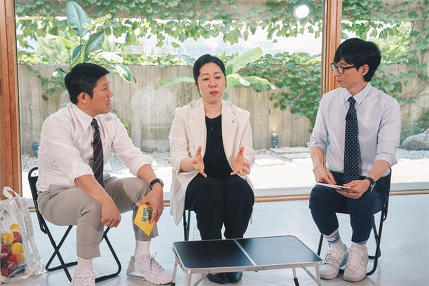
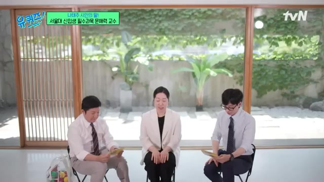
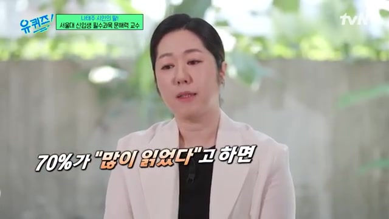
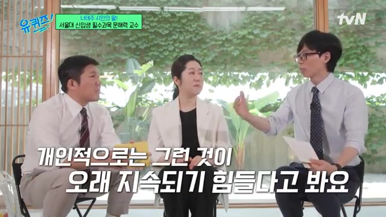
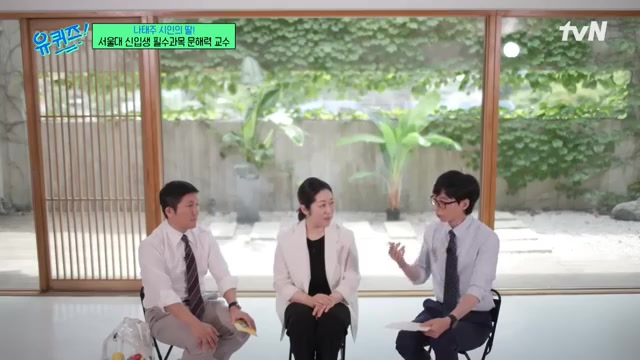
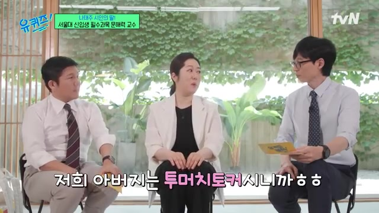
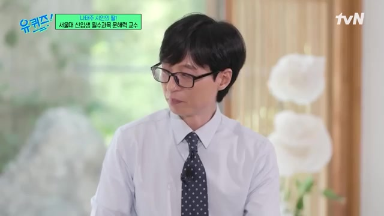

안녕하세요 한스입니다.
2024년 7월 24일 TVN 유퀴즈온더블럭에는 서울대학교 글쓰기 교수인 나민애 교수님이 출연하여 글쓰기와 국어의 중요성에 대해 이야기했습니다.
유퀴즈 나민애 교수님
대학에서 글쓰기 강의의 중요성은?

- 서울대에서의 글쓰기 강의는 필수 교양 과목
- 대학은 학술 공동체로서 소통의 방식을 익히는 것이 중요
- 글읽기와 글쓰기는 대학생으로서 필요한 소통 방식의 핵심
- 사회 생활을 하면서 생각을 명확하게 표현하는 능력이 중요함
- 자신의 생각을 글로나 말로 명확하게 전달하는 것은 중요하지만 어려움
대학 수업과 국어학습이 중요한 이유는?
- 대학 글쓰기 수업은 자율적 사고와 글쓰기 능력을 강화
- 국어 학습은 자료 선택 능력과 의사 소통 능력 향상에 도움이 되며, 또한 진입 장벽을 줄여줌
- 책을 많이 읽는 학생들이 독서 실적을 높이는 것으로 나타났고, 초등학교 시절 읽기 습관이 중요
독서로 사고 능력을 어떻게 키울 수 있을까?

- 일주일, 한 달, 3년, 5년이 걸리는 급진적인 책쓰기와 책을 최종적으로 이해하는 어려움
- 책을 읽으며 편안하거나 쉽지 않고 인내가 필요
- 책에도 어려움과 인내가 필요하며, 독자는 이를 감당하면서 성장 가능
- 책을 통해 이루는 어려운 과제는 성취감을 가져와 어려움을 시도해야함
책을 정리하는 효과적인 방법은?

- 책을 읽을 때 항상 정리하는 것이 중요
- 요리와 유사하게, 몸을 움직여 경험해봐야 이해할 수 있으며, 과정을 통해 배움
- 책을 읽으면서 내용을 정리해 파일로 보관하는 것이 중요
- 책에서 추출한 인용구를 타이핑하여 정리하고 내가 좋아하는 것을 찾아나가는 과정이 중요
아버지의 영향으로 독서를 어떻게 했나요?

- 아버지의 가르침과 책 속 지혜, 시 이야기를 통해 성장함
- 책을 생명체로 여기며, 아버지의 가르침에 영향을 받아 독서로 성장
- 아버지의 도움으로 책을 읽고 자라며, 책 속으로 빠져들던 경험을 나눔
- 집에 많은 책을 갖고 있어서 책의 생명과 소중함을 깨달음
- 어린 시절 독서를 통해 책의 존엄성을 인식
아버지의 가르침은 무엇이었나요?

- 아버지는 책을 읽고 단어를 연구하며 중요성을 가르치셨죠.
- 사전에서 단어를 찾고 궁리하는 것에 대한 노력을 전해주셨고, 말에 대한 감각을 세워 주셨죠.
- 아버지를 통해 가난에 대한 이해와 용서, 그리고 자립의 중요성을 배웠어요.
- 그리고 아버지는 작은 일에도 성실함을 가르치시며 성장하도록 도와주셨죠..
스위스 여행의 특별한 기억은?

아버지가 집을 떠나기 전에 아침상 차리며 추억이 샘솟아요. 아버지의 빈자리를 느끼고 마음이 아프지만, 늙어가는 아버지와 함께한 여행을 소중히 생각해요. 아버지가 가난을 막아준 고마운 마음, 딸과 스위스 여행 약속을 눈물 속에 회상하죠.
아버지와 함께한 여행은 소중한 추억으로, 아버지를 고마워하며 여행을 충분히 즐겼다는 흠잡을 데 없는 만족감이 느껴져요..